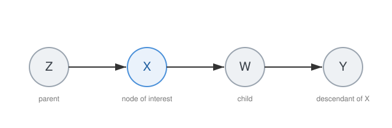
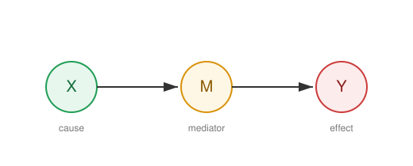
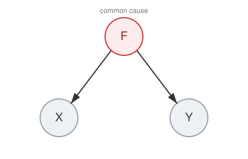
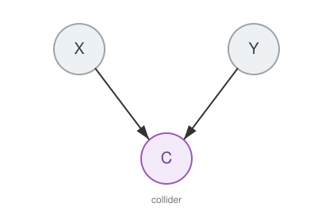
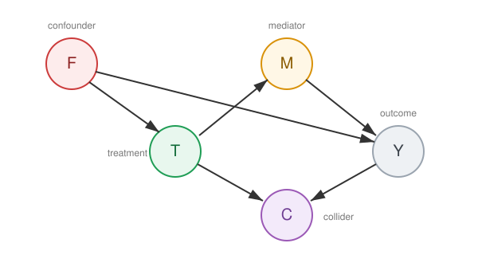

Graphical Causal Models#
This chapter introduces Directed Acyclic Graphs (DAGs) as the language for encoding causal assumptions. The presentation follows Shalizi (2025, Chs. 21–22), with additional references to Pearl (2009). See also the Python Causality Handbook (Ch. 4) for an applied introduction.
Causal Diagrams#
A causal diagram is a graph where nodes represent random variables and directed edges (\(\rightarrow\)) represent direct causal effects. The absence of an edge encodes the assumption that there is no direct causal effect between two variables.
Definition 1 (Directed Acyclic Graph (DAG))
A directed acyclic graph \(\mathcal{G} = (V, E)\) consists of:
a finite set of vertices (nodes) \(V = \{V_1, V_2, \dots, V_p\}\), each representing a random variable,
a set of directed edges \(E \subseteq V \times V\), where \((V_i, V_j) \in E\) is drawn as \(V_i \rightarrow V_j\),
subject to the constraint that there are no directed cycles: there is no sequence \(V_{i_1} \rightarrow V_{i_2} \rightarrow \cdots \rightarrow V_{i_k} \rightarrow V_{i_1}\).
The acyclicity constraint reflects the assumption that causes precede their effects — no variable can be its own cause through any chain of intermediate variables (Shalizi, 2025, §21.1).
Graph Terminology#
Definition 2 (Parents, Children, Ancestors, Descendants)
Given a DAG \(\mathcal{G} = (V, E)\) and a node \(X \in V\):
Parents of \(X\): \(\text{Pa}(X) = \{Z \in V : Z \rightarrow X \in E\}\)
Children of \(X\): \(\text{Ch}(X) = \{Z \in V : X \rightarrow Z \in E\}\)
Ancestors of \(X\): all nodes \(Z\) such that there exists a directed path \(Z \rightarrow \cdots \rightarrow X\)
Descendants of \(X\): all nodes \(Z\) such that there exists a directed path \(X \rightarrow \cdots \rightarrow Z\)
{kind=link}

Fig. 4 Graph terminology: relative to the node of interest \(X\), the node \(Z\) is a parent, \(W\) a child, and \(Y\) a descendant.#
A path between two nodes is any sequence of edges connecting them, regardless of direction. A directed path follows the arrow directions. A causal path from \(T\) to \(Y\) is a directed path \(T \rightarrow \cdots \rightarrow Y\).
Three Fundamental Path Structures#
Every path through three variables takes one of exactly three forms. Understanding these structures is the key to reasoning about confounding and adjustment (Shalizi, 2025, §21.2).
Chains (Mediation)#
Definition 3 (Chain (Mediator))
A chain is a path of the form \(X \rightarrow M \rightarrow Y\). The variable \(M\) is called a mediator — it transmits the causal effect of \(X\) on \(Y\).
{kind=link}

Fig. 5 A chain: the mediator \(M\) transmits the causal effect of the cause \(X\) on the effect \(Y\).#
In a chain, \(X\) and \(Y\) are marginally dependent (information flows through \(M\)), but conditionally independent given \(M\): once we know \(M\), learning \(X\) provides no additional information about \(Y\).
Forks (Common Cause / Confounding)#
Definition 4 (Fork (Common Cause))
A fork is a path of the form \(X \leftarrow F \rightarrow Y\). The variable \(F\) is a common cause (confounder) of \(X\) and \(Y\).
{kind=link}

Fig. 6 A fork: the common cause \(F\) induces a spurious association between \(X\) and \(Y\).#
In a fork, \(X\) and \(Y\) are marginally dependent (the common cause \(F\) induces a spurious association), but conditionally independent given \(F\):
This is the structure that generates confounding bias: if \(F\) is not adjusted for, the association between \(X\) and \(Y\) conflates the causal effect with the spurious path through \(F\).
Colliders (Common Effect)#
Definition 5 (Collider)
A collider on a path is a node \(C\) where two arrowheads meet: \(X \rightarrow C \leftarrow Y\). The variable \(C\) is a common effect of \(X\) and \(Y\).
{kind=link}

Fig. 7 A collider: \(C\) is a common effect of \(X\) and \(Y\). Conditioning on \(C\) opens a spurious path between them.#
Colliders behave opposite to chains and forks. In a collider structure, \(X\) and \(Y\) are marginally independent — there is no open path connecting them. However, conditioning on the collider \(C\) (or any descendant of \(C\)) opens the path and induces a spurious association:
This is the source of collider bias (also called selection bias or Berkson’s paradox). Adjusting for a collider — or for a descendant of a collider — creates a spurious association where none existed (Shalizi, 2025, §21.2).
Summary of Path Structures#
Structure |
Path |
Marginal |
Conditional on middle node |
|---|---|---|---|
Chain (Mediator) |
\(X \rightarrow M \rightarrow Y\) |
Dependent |
Independent |
Fork (Common Cause) |
\(X \leftarrow F \rightarrow Y\) |
Dependent |
Independent |
Collider (Common Effect) |
\(X \rightarrow C \leftarrow Y\) |
Independent |
Dependent |
\(d\)-Separation#
The three path structures above give rise to a general graphical criterion for reading off conditional independencies from a DAG.
Definition 6 (Blocked Path)
A path \(p\) between nodes \(X\) and \(Y\) in a DAG is blocked by a set of nodes \(Z\) if and only if \(p\) contains a node \(W\) such that either:
\(W\) is a non-collider on \(p\) (i.e. \(W\) is in a chain or fork) and \(W \in Z\) (we condition on it), or
\(W\) is a collider on \(p\) and neither \(W\) nor any descendant of \(W\) is in \(Z\).
Definition 7 (\(d\)-Separation)
Two nodes \(X\) and \(Y\) are \(d\)-separated by a set \(Z\) in a DAG \(\mathcal{G}\), written \(X \perp_{\mathcal{G}} Y \mid Z\), if every path between \(X\) and \(Y\) is blocked by \(Z\).
If \(X\) and \(Y\) are not \(d\)-separated by \(Z\), they are \(d\)-connected given \(Z\).
\(d\)-separation is the graphical analogue of conditional independence. It provides a purely mechanical procedure: to check whether \(X \perp\!\!\!\perp Y \mid Z\), enumerate all paths between \(X\) and \(Y\) and verify that each one is blocked (Shalizi, 2025, §21.2).
Conditional Independence#
The connection between the graphical criterion (\(d\)-separation) and the probabilistic property (conditional independence) is formalised by two properties.
Property 1 (Causal Markov Condition)
If a DAG \(\mathcal{G}\) is a causal model for a distribution \(P\), then every variable \(X\) is conditionally independent of its non-descendants given its parents:
Equivalently: if \(X \perp_{\mathcal{G}} Y \mid Z\) (\(d\)-separation), then \(X \perp\!\!\!\perp Y \mid Z\) (conditional independence in \(P\)).
The Causal Markov Condition ensures that \(d\)-separation implies conditional independence. The converse — that every conditional independence in the data corresponds to a \(d\)-separation in the graph — requires an additional assumption.
Assumption 5 (Faithfulness)
A distribution \(P\) is faithful to a DAG \(\mathcal{G}\) if the only conditional independencies in \(P\) are those entailed by \(d\)-separation in \(\mathcal{G}\).
Equivalently: if \(X \perp\!\!\!\perp Y \mid Z\) in \(P\), then \(X \perp_{\mathcal{G}} Y \mid Z\).
Together, the Causal Markov Condition and faithfulness give a one-to-one correspondence between \(d\)-separation statements and conditional independence relations (Shalizi, 2025, §22.3).
Example: \(d\)-Separation in Practice#
Consider the following DAG:
{kind=link}

Fig. 8 A DAG combining all three path structures: a fork through the confounder \(F\), a chain through the mediator \(M\), and a collider \(C\) that is a common effect of \(T\) and \(Y\).#
Example 1 (\(d\)-Separation in Practice)
\(T\) and \(Y\) given \(\emptyset\): The path \(T \leftarrow F \rightarrow Y\) is open (fork, \(F\) not conditioned on). \(T\) and \(Y\) are \(d\)-connected — not independent.
\(T\) and \(Y\) given \(F\): The backdoor path \(T \leftarrow F \rightarrow Y\) is now blocked. The directed path \(T \rightarrow M \rightarrow Y\) remains open (chain, \(M\) not conditioned on). \(T\) and \(Y\) are \(d\)-connected given \(F\) — but now the remaining open paths are causal.
\(T\) and \(Y\) given \(\{F, C\}\): Conditioning on the collider \(C\) opens the path \(T \rightarrow C \leftarrow Y\), creating collider bias. This is an incorrect adjustment set.
TODO: more examples